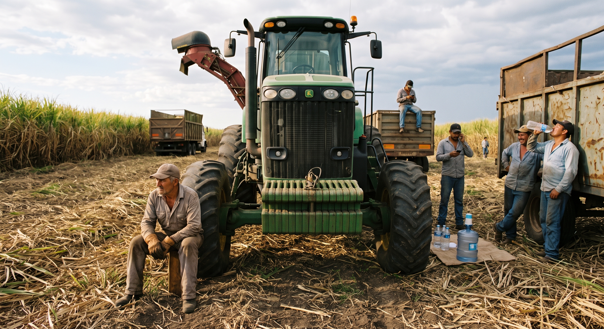
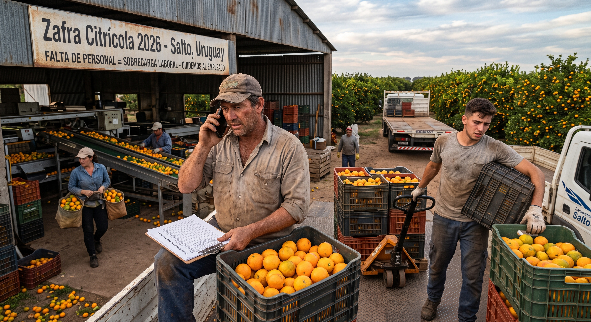
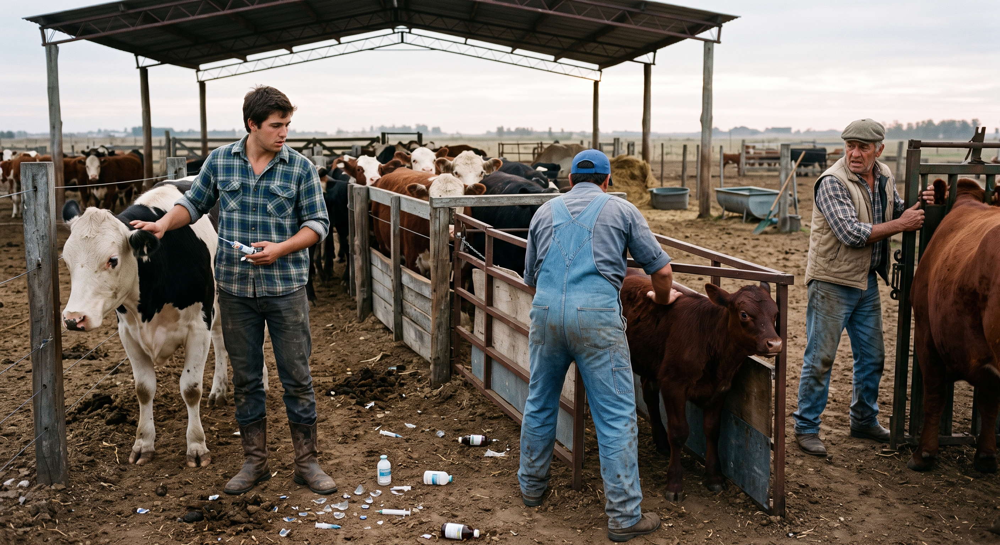

Calcula en tiempo real la pérdida estimada por rotación de personal y vacantes sin cubrir en períodos de zafra.
Más allá de la masa salarial, la inestabilidad del equipo impacta directo en la estructura productiva:

La falta de peones, cosechadores o maquinistas frena la recolección. Cada día de retraso expone la producción a factores climáticos y pérdidas de calidad.

Cuando falta un trabajador, el puestero de confianza o el capataz absorben la faena. El agotamiento acumulado genera descontento y riesgo de perder al empleado valioso.

El personal ingresante sin inducción adecuada comete errores en la manga, maltrata involuntariamente al rodeo o descuida la sanidad, provocando mermas de kilos en balanza.
Acompañamos a empresas del sector a estructurar sus procesos de selección e inducción, reduciendo la rotación en momentos críticos y asegurando la tranquilidad operativa del equipo.
👉 Ver Soluciones de Gestión Humana para el Campo